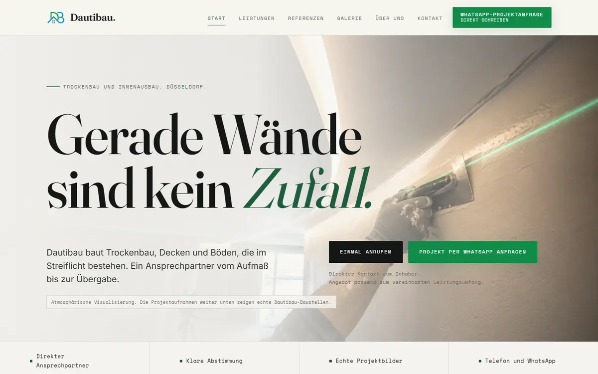
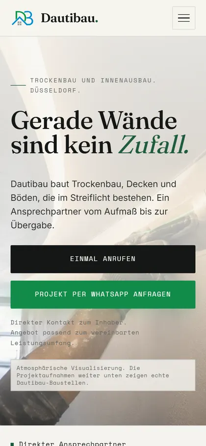
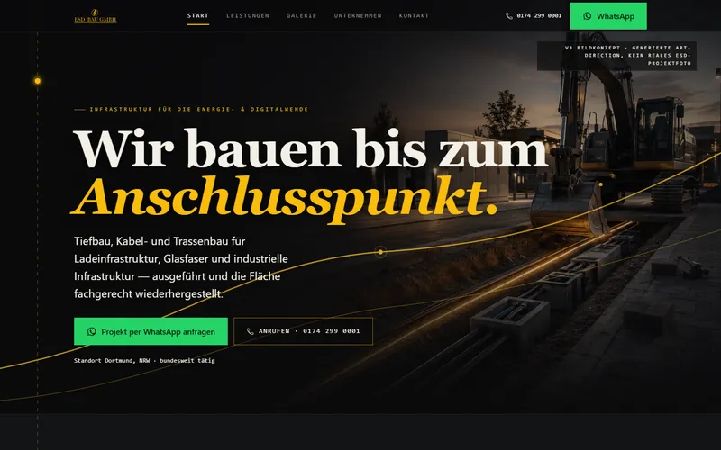

Aus der Praxis
Dautibau
Website · fertig, Veröffentlichung in Vorbereitung
Trockenbau und Innenausbau: ein Auftritt, gebaut fürs Handy, mit Anruf und WhatsApp griffbereit und echten Baustellenfotos.

ESD Bau GmbHRelaunch in Arbeit, erster Entwurf